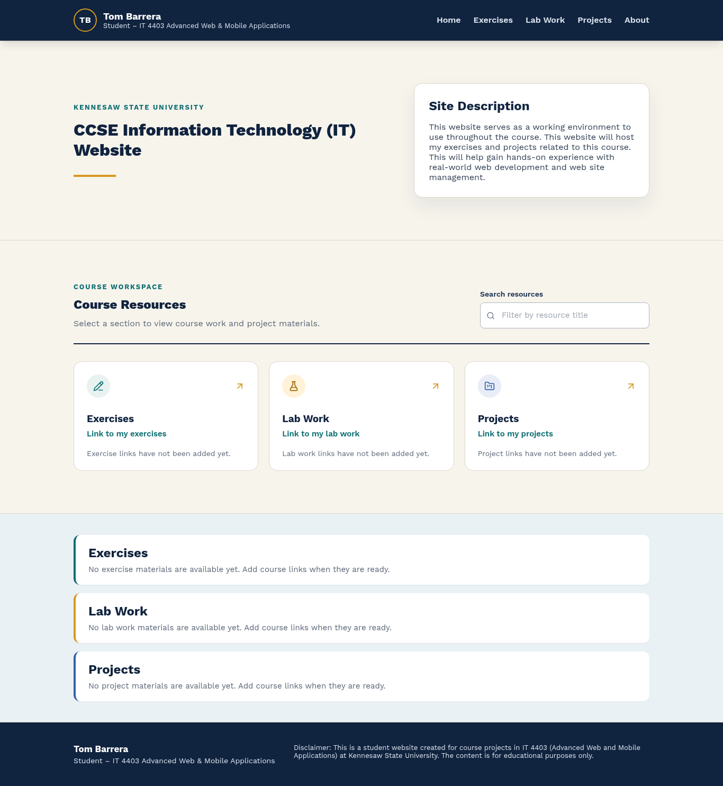

Website
Design and Layout
I used Canva to create a basic wireframe for the initial website design. I then used the design and layout to create the website according to the lab requirements.
The main elements include a CCSE link, a site description, and navigation links to the Exercises, Lab Work, and Projects pages. The site also includes a header with my name and a disclaimer in the footer. The About section links to future descriptions of the Exercises, Lab Work, and Projects sections.

Hosting and Repository Management
I use Microsoft Azure, deployed through Azure App Service, as the hosting provider and GitHub for code repository management. Microsoft Azure provides a scalable service for hosting web applications and allows developers to run applications in a secure cloud environment without maintaining physical server hardware.
Azure and GitHub Actions provide a practical workflow: GitHub stores and manages the application code, while Azure hosts and deploys the completed application.